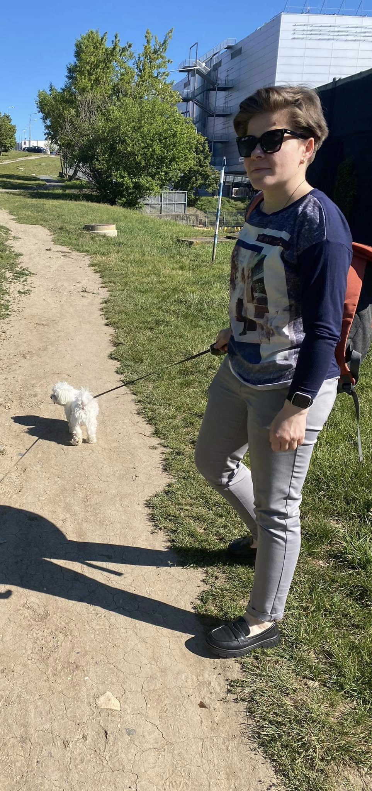

Budoucí frontend vývojářka s přesností účetní a srdcem programátorky.

z účetnictví do IT
2024 — teď
Začala jsem se intenzivně věnovat webovému vývoji a kombinuji vlastní znalosti s moderními technologiemi a praxí z různých zdrojů. Rychlý rozvoj umělé inteligence mě naučil pracovat efektivněji, analyzovat řešení a optimalizovat proces tvorby projektů.
Využívám xAI Grok, Base44, Google Gemini a OpenAI ChatGPT jako nástroje pro urychlení vývoje, hledání řešení a zlepšování vlastních dovedností. Umělou inteligenci nevnímám jako náhradu programování, ale jako jeho silné rozšíření.
Ráda vytvářím moderní webové projekty, rychle se učím a neustále zdokonaluji svůj přístup k vývoji.
Práce s čísly, přesnost, struktura a odpovědnost — dovednosti, které teď přenáším do programování.
Kombinuji webový vývoj a AI nástroje, abych vytvářela moderní řešení rychleji, chytřeji a efektivněji.
Strukturovaný přístup k problémům a hledání nejefektivnějších řešení.
Zkušenost z účetnictví mi dává smysl pro detail, který je v kódu neocenitelný.
Dokážu se rychle adaptovat na nové technologie a nástroje.
„Nečekám na ideální podmínky.— Kseniia Kovalenko
Prostě začnu psát kód a zlepšuji se s každým projektem.“